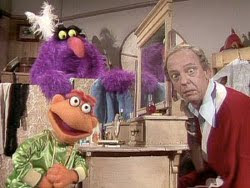

See Beneath the Surface
9/19/2010
Let me tell you, Jesse hated this job. And you would too, I imagine, if you had to do it. Jesse was a chicken plucker.
That's right. He stood on a line in a chicken factory and spent his days pulling the feathers off dead chickens so the rest of us wouldn't have to.
It wasn't much of a job. But at the time, Jesse didn't think he was much of a person. His father was a brute of a man. His dad was actually thought to be mentally ill and treated Jesse rough all of his life.
Jesse's older brother wasn't much better. He was always picking on Jesse and beating him up. Yes, Jesse grew up in a very rough home in West Virginia.
Life was anything but easy. And he thought life didn't hold much hope for him. That's why he was standing in this chicken line, doing a job that darn few people wanted.
In addition to all the rough treatment at home, it seems that Jesse was always sick. Sometimes it was real physical illness, but way too often it was all in his head. He was a small child, skinny and meek. That sure didn't help the situation any.
When he started to school, he was the object of every bully on the playground.
He was a hypochondriac of the first order. For Jesse, tomorrow was not always something to be looked forward to. But, he had dreams. He wanted to be a ventriloquist. He found books on ventriloquism. He practiced with sock puppets and saved his hard earned dollars until he could get a real ventriloquist dummy.
When he got old enough, he joined the military. And even though many of his hypochondriac symptoms persisted, the military did recognize his talents and put him in the entertainment corp. That was when his world changed. He gained confidence. He found that he had a talent for making people laugh, and laugh so hard they often had tears in their eyes. Yes, little Jesse had found himself.
You know, fol
Yes, that little paranoid hypochondriac, who transferred his nervousness into a successful career, still holds the record for the most Emmy's given in a single category. The wonderful, gifted, talented, and nervous comedian who brought us Barney Fife was Jesse Don Knotts.
-- John E. Dent, Jr.
Content Editor, Life Lessons
LifeWay Christian Resources
That's right. He stood on a line in a chicken factory and spent his days pulling the feathers off dead chickens so the rest of us wouldn't have to.
It wasn't much of a job. But at the time, Jesse didn't think he was much of a person. His father was a brute of a man. His dad was actually thought to be mentally ill and treated Jesse rough all of his life.
Jesse's older brother wasn't much better. He was always picking on Jesse and beating him up. Yes, Jesse grew up in a very rough home in West Virginia.
Life was anything but easy. And he thought life didn't hold much hope for him. That's why he was standing in this chicken line, doing a job that darn few people wanted.
In addition to all the rough treatment at home, it seems that Jesse was always sick. Sometimes it was real physical illness, but way too often it was all in his head. He was a small child, skinny and meek. That sure didn't help the situation any.
When he started to school, he was the object of every bully on the playground.
He was a hypochondriac of the first order. For Jesse, tomorrow was not always something to be looked forward to. But, he had dreams. He wanted to be a ventriloquist. He found books on ventriloquism. He practiced with sock puppets and saved his hard earned dollars until he could get a real ventriloquist dummy.
When he got old enough, he joined the military. And even though many of his hypochondriac symptoms persisted, the military did recognize his talents and put him in the entertainment corp. That was when his world changed. He gained confidence. He found that he had a talent for making people laugh, and laugh so hard they often had tears in their eyes. Yes, little Jesse had found himself.
You know, fol

ks, the history books are full of people who overcame a handicap to go on and make a success of themselves, but Jesse is one of the few I know of who didn't overcome it. Instead he used his paranoia to make a million dollars, and become one of the best-loved characters of all time in doing it!Yes, that little paranoid hypochondriac, who transferred his nervousness into a successful career, still holds the record for the most Emmy's given in a single category. The wonderful, gifted, talented, and nervous comedian who brought us Barney Fife was Jesse Don Knotts.
-- John E. Dent, Jr.
Content Editor, Life Lessons
LifeWay Christian Resources
{kind=link}